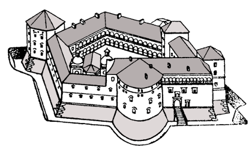
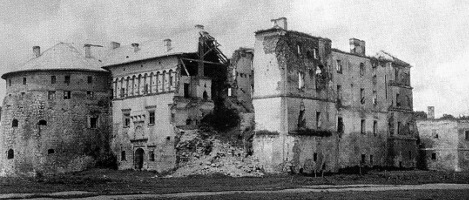

Бережанський замок
Бережанський замок — пам'ятка оборонної архітектури в м. Бережани Тернопільської області (Галичина). Збудований родиною Сенявських у 16-18 ст. Замковий костел Святої Трійці (1554) - родова усипальниця Сенявських.
Одним з найдавніших зображень замку є план 1755 року капітана де Пірша. На його основі польський історик Казімєж Куcнєж (пол. Kazimierz Kusnierz) висловив здогадку, що твердиню в Бережанах почали будувати попередні власники поселення: Цебровські, Бучацькі або Уньовські.
Бережанський замок (1554), іменований «Східним Вавелем», вважають найвизначнішою захисною спорудою епохи Ренесансу. Обширна територія, що нині міститься в межах міського парку, обгороджена кам'яним муром. На відміну від інших твердинь, Бережанський замок постав не на високій горі, а в глибокій заболоченій річковій долині на острові, утвореному двома рукавами річки Золота Липа. Цей замок створено не як військово-оборонну, а як оборонно-житлову споруду.
1570 року замок був додатково розбудований і зміцнений.У 1619—1622 роках італійські архітектори перебудували замок за новоголландською системою, розробленою Ґійомом Л. де Бопланом. Навколо замкових валів заклали додаткові бастіонні фортифікаційні укріплення. Було зведено 4 бастіони. В'їзд до замку влаштовано через равелін. Підступи до замкових укріплень були захищені водою. Замок мав форму п'ятикутника з 4 оборонними вежами (три з них збереглися дотепер). За периметром замку йшли не оборонні мури, а житлові будинки. До замку вела оздоблена кам'яною різьбою в'їздна брама з перекидним ланцюговим мостом. Внутрішнє подвір'я було влаштоване у формі італійського палаццо.
1620 року татарські чамбули, що снували в околицях Бережан, навіть не наважились штурмувати міські укріплення. У 17 ст. у східній частині замку збудували палац, який за пишне оздоблення порівнювали з краківським Вавелем. У 18 столітті замок був відомий своєю збіркою живопису, частини якої тепер зберігаються у різних музеях України. Юліуш Словацький у своєму творі «Ян Білецький» писав:
Бжежанський пан в околиці чарівній
Оселю мав. Там поміж двох потоків
Розкішний замок у красі предивній
Каплиця й башти зводились високі.